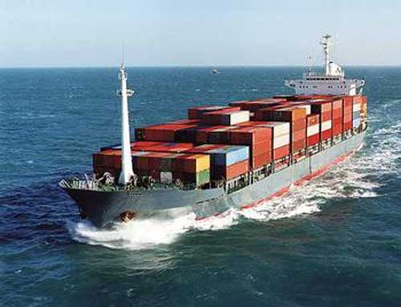
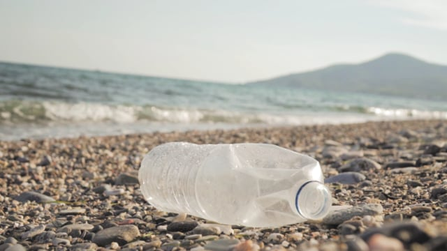
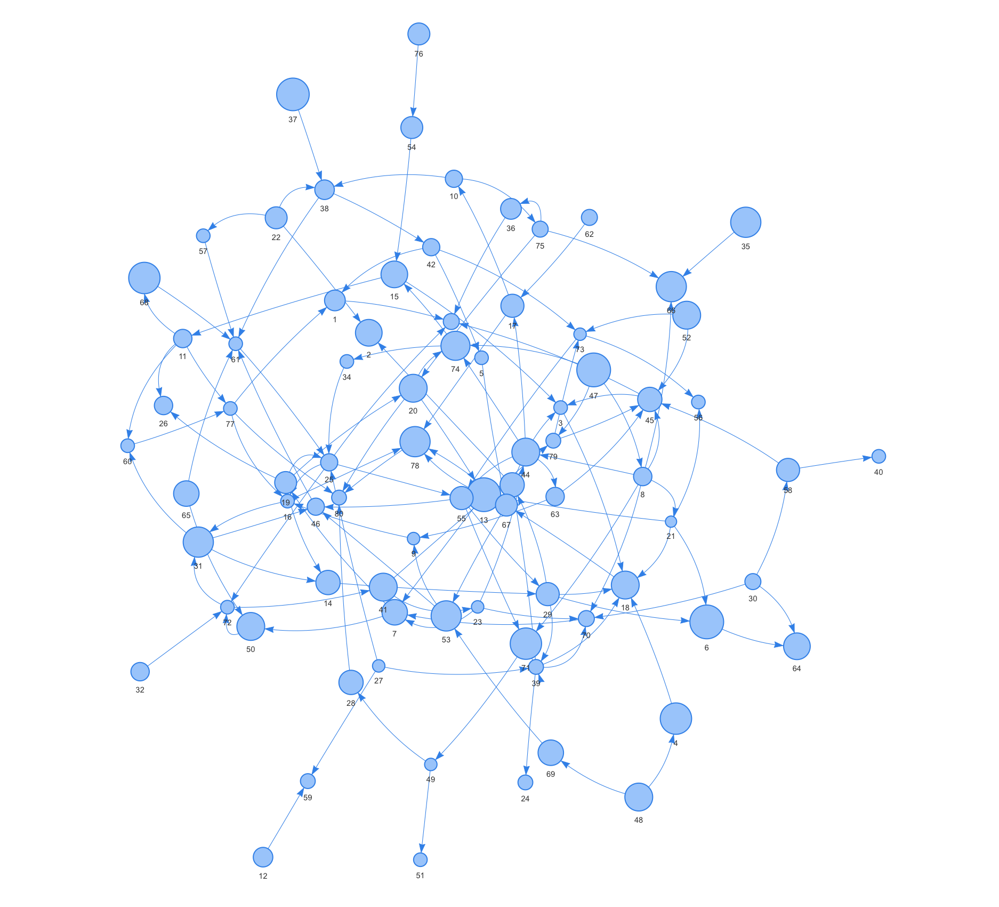

Problem
The different oceans in the world are filled with garbage more and more everyday. Giving an example, The Great Pacific Garbage Patch is the largest accumulation of ocean plastic in the world and is located between Hawaii and California. Scientists of The Ocean Cleanup have conducted the most extensive analysis ever of this area.
It is estimated that 1.15 to 2.41 million tonnes of plastic are entering the ocean each year from rivers. More than half of this plastic is less dense than the water, meaning that it will not sink once it encounters the sea.
This is major problem that, not only affects us indirectly, but directly as we are all part of the same earth.
Solution
General approach
Our proposition is an automatic system formed by three types of structures:
> Rafts
> Antboats
> Collectors
Each of these bots will simulate the behaviour of a colony of ants, collecting trash from different points of the oceans.
Rafts, the beacons of the colony
Selecting a zone in the map where presumably trash will be found, these big boats will travel to the selected area with the only task to keep it clean. Afterwards, the antboats will be displayed in the area and, like ants searching for food pieces, will search for garbage, pick it with their mechanic arms and they will deploy it in agrouped ammounts of trash called "clusters" pilling them up. Now it is the mission of the collectors to go and collect these ammounts and take them to the trash drafts.
Antboats, the trash searchers
Authonomy and ecologic, these are two words that perfectly describe these bots as they work as authonomic "agents" moving around the area where they were deployed, searching for trash and pilling them up and sorting them in clusters for the collectors. These bots work with a solar energy supply that make their search more ecological and energy-saving.
Final step: collectors
Once the piles are formed, the collectors will be deployed in the area continuing the job of the antobats. Then a satellite will mark down the piles forming a connected graph where the clusters will be the nodes, and every node will connect with the others creating the graph previously mentioned making the collectors search for minimum path in a back and forth trip, saving resources and time.
